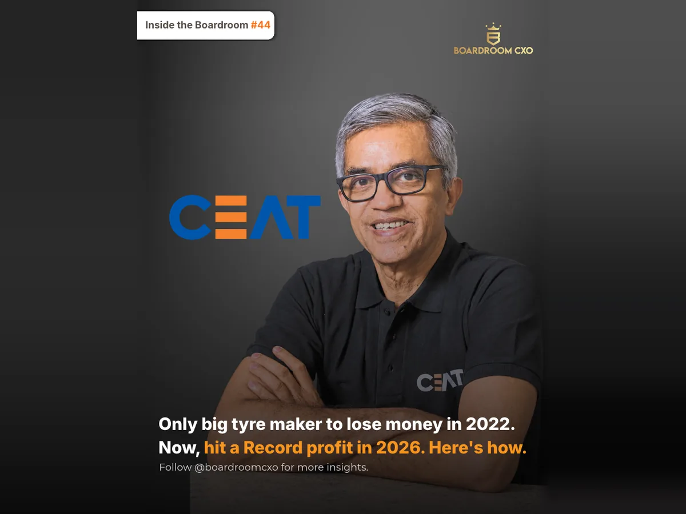

Key Takeaways
- CEAT reported a consolidated net loss of ₹20 crore in the October to December 2021 quarter, and its FY22 profit fell 83.5% to ₹71 crore, while MRF and Apollo Tyres stayed in profit.
- Under Arnab Banerjee, MD and CEO since April 2023, CEAT agreed to buy Michelin's Camso tyres and tracks business for about $225 million and posted its highest ever profit of ₹697 crore in FY26.
- After consolidated profit fell 96% to ₹4 crore in the April to June 2026 quarter, Banerjee ruled out any price rollback, and profit recovered to ₹112 crore in the July to September 2026 quarter.
"There is no question of any rollback of price at this moment."
Arnab Banerjee, Managing Director and CEO of CEAT Limited, said that on an earnings call in July 2026. His company had just reported a quarterly profit of ₹4 crore, down 96% from a year earlier.
Most CEOs in that spot would cut prices to protect volumes. Banerjee told analysts the opposite: the price increases CEAT had taken were not enough, and more were coming.
To understand why he held firm, you have to go back to the last time a cost shock hit CEAT, and what the board did next.
The Quarter CEAT Lost Money and Its Rivals Did Not
In the October to December 2021 quarter, rising commodity costs hit every Indian tyre maker. CEAT was hit hardest. It reported a consolidated net loss of ₹20 crore on revenue of ₹2,413 crore. A year earlier, in the same quarter, it had made a profit of about ₹132 crore.
The company blamed weak demand in the replacement market, higher fuel prices, slower rural demand, a chip shortage that hurt carmakers, and rising input costs. Anant Goenka, then Managing Director, said: "We are taking necessary corrective actions to cut costs and are looking at appropriate price increases going forward."
Its larger rivals had a bad quarter too, but they stayed in profit. Apollo Tyres reported a net profit of ₹224 crore, against ₹444 crore a year earlier, roughly half. MRF's profit fell 71.3% to ₹149.39 crore. Both were hurting. Only CEAT was in the red.
The full year told the same story. In FY22, CEAT's sales rose 23% to ₹9,363 crore, but its net profit fell 83.5% to ₹71 crore, from ₹432 crore in FY21. CEAT was selling more tyres and keeping far less of what it earned.
Who Is Arnab Banerjee?
Arnab Banerjee is the Managing Director and CEO of CEAT Limited, the RPG Group tyre company. He joined CEAT in 2005 as Vice President, Sales and Marketing, and later became its Chief Operating Officer. Before CEAT, he worked at Berger Paints and Marico. He has more than 30 years of executive experience.
He studied at IIT Kharagpur and IIM Calcutta, and is also an alumnus of Harvard Business School.
In March 2023, CEAT's board named him MD and CEO from 1 April 2023, with Anant Goenka moving to Vice Chairman. The board did not look outside. It handed the company to the insider who had been running its operations through the hard years, about fifteen months after the loss-making quarter.
The Turn: Arnab Banerjee Pushed CEAT Toward Premium
After a bad year, the safe move for a tyre company is to chase volume: discount, push more units through dealers, and hope scale fixes the margins. Under Banerjee, CEAT talked instead about four trends it wanted to own: electrification, international business, premium products, and digital and AI.
The results showed up in the mix of what CEAT sells.
- Bigger, costlier tyres. In the April to June 2026 quarter, sales volume of premium tyres with a rim size of 17 inches or more doubled in the replacement market from a year earlier. In car makers' factories, most of CEAT's growth also came from the 17-inch-plus segment.
- Electric vehicles. CEAT said it had about 25% share each in tyres fitted by makers of electric passenger vehicles and electric two-wheelers in India. In other words, about one in four.
- Outside India. International sales made up about 23% of turnover including Camso, and about 20% on a standalone basis.
The biggest bet was Camso. In December 2024, CEAT agreed to buy Michelin's Camso off-highway construction equipment tyres and tracks business for about $225 million, or roughly ₹1,905 crore. Banerjee explained why the tracks side mattered more:
"So, between the two, tyres and tracks, the latter is more attractive, where CEAT will focus on growth."
He said the track segment was growing faster and had a larger premium share. It was a move up the value chain, not a race to the bottom on price.
CEAT's Results: A Record Year, Then a New Shock
FY26 was CEAT's strongest year. Revenue from operations rose 18.6% to ₹15,678 crore, crossing ₹15,000 crore for the first time. Profit after tax was ₹697 crore, which the company called its highest ever. In the January to March 2026 quarter alone, profit rose 145% to ₹244 crore.
Then the costs turned again. In the April to June 2026 quarter, natural rubber and crude-linked materials surged, with the West Asia war adding to supply disruption. CEAT's raw material costs rose about 15% to 16% over the average of the previous quarter.
Revenue still grew 22.3% to ₹4,318 crore. But consolidated profit collapsed to ₹4 crore, from ₹112 crore a year earlier, a fall of 96%. Part of that came from a one-time hit of about ₹48 crore linked to a fall in the Sri Lankan rupee. Standalone profit was about ₹98 crore. Banerjee said CEAT's gross margin, normally 40% to 41%, had dropped to 33%.
This was the moment that tested him. An analyst asked whether CEAT might roll back price increases if it lost market share. His answer:
Price hikes are being taken with a lag to raw material price hike, "and it is so far inadequate, as you can see from our margins in quarter 1." And then: "there is no question of any rollback of price at this moment."
He went further. Even if raw material prices fell later in the year, he said CEAT would "intend to hold on to the price until we recover to a normal level of operation if we can, given the competitive situation."
In the July to September 2026 quarter, revenue rose 26.2% to ₹4,762 crore. Consolidated profit climbed back to ₹112 crore from ₹4 crore in the previous quarter, though it was still about 40% below the ₹186 crore of a year earlier. Not fully back yet, but coming back.
The Boardroom Lesson: A Price Held Protects the Brand
In 2021, CEAT was the tyre maker that could not absorb a cost shock. Five years later, under a CEO who had lived through that loss, it took an even sharper hit in one quarter and refused to discount its way out.
That choice only works because of what came before it. A company that has moved into premium tyres, EV fitments and international tracks has a brand worth protecting. A company selling on price alone does not have that option.
A price cut saves one quarter. A price held saves the brand.
Common Mistakes Boards Make When a Cost Shock Hits
When margins collapse in one quarter, boards often push management in the wrong direction.
They judge the CEO on one quarter. CEAT's profit fell 96% in April to June 2026 and recovered to ₹112 crore the next quarter. A board that panics on the first number may force decisions that hurt the next five years.
They ask for volume instead of margin. Discounting to defend market share feels safe, but it trains customers to expect lower prices. CEAT kept raising prices while revenue still grew more than 20%.
They overlook the insider who lived through the last crisis. Banerjee had been at CEAT since 2005 and was its COO before he was its CEO. He had already seen what an unabsorbed cost shock does to the company, and he knew which levers worked.
A Framework for Hiring a CEO Who Can Hold Price
When we brief boards on a leadership search for a consumer or industrial brand, we look for three things in candidates who will face cost shocks.
- A record of building pricing power, not just volume. Ask what share of their past revenue came from premium products, and how that changed under them.
- Calm under a bad quarter. Ask them to walk through their worst quarter: what they cut, what they protected, and what they refused to do.
- Honesty with investors. Banerjee told analysts the price hikes were not enough. Leaders who admit the gap early tend to close it faster.
Why This Belongs in the Boardroom, Not Just the Business Pages
CEAT's story fits next to how Marico refused to blink on price and how Siddhartha Lal built Royal Enfield's premium position. In each case, a leader decided the brand was worth more than one quarter's numbers.
Anyone can cut a price. It takes a CEO, and a board behind him, to hold one.
Sources
- Autocar Professional, CEAT records net loss in Q3, January 2022
- Autocar Professional, Apollo Tyres' Q3 revenue up 10 percent on cost control, price hike, February 2022
- IIFL (India Infoline), MRF records over 71% YoY decline in PAT to Rs149.39 crore during Q3FY22; revenue logs single digit growth, February 2022
- IIFL (India Infoline), CEAT consolidated net profit declines 83.48% in the March 2022 quarter, May 2022
- Free Press Journal, CEAT appoints COO, Arnab Banerjee as new CEO, March 2023
- Free Press Journal (PTI), CEAT eyes larger premium play in OHT, tracks business after deal with Michelin, December 2024
- DSIJ, India's leading tyre manufacturer reports 145% surge in Q4 PAT and FY26 revenue crosses Rs 15,000 crore, April 2026
- CEAT Limited (earnings call transcript), CEAT Limited Q1 FY27 earnings conference call, July 2026
Related Reading
Refused to Blink: The Boardroom Lesson Behind Marico's War With Hindustan Lever
Read → R · 02 Founder Leadership · August 2026Everyone Said Royal Enfield Was Finished. Siddhartha Lal Asked for Two Years.
Read → R · 03 Founder Leadership · October 2026Rajiv Bajaj Walked Away From Scooters. Then He Rebuilt the Chetak Name.
Read →Looking for a CEO who can hold price when costs spike?
We look for leaders who have built pricing power and kept their nerve through a bad quarter, and we check how they did it. Brief us on your next CXO mandate and we will show you who the market has.
Brief Us on a Mandate See all Sales & Retail roles we fill →